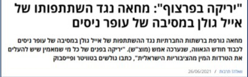
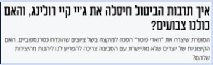

תקינות פוליטית (PC)
שפה, כוח ותרבות הביטול
מושגי מפתח (לחצו לפירוש)
הגדרה
תקינות פוליטית (PC)
תקינות פוליטית (PC): עיצוב שיח במטרה שלא להעליב או לתת תחושת נחיתות לקבוצות או יחידים בחברה (למשל: 'בעל מוגבלות' במקום 'נכה').
הרעיון: ל**שפה יוצרת מציאות** יש כוח לעצב מציאות. שינוי השפה יכול לשנות יחסי כוח בחברה.
דוגמאות לשינויי שפה:
- "בעל" -> "איש" / "בן זוג" (למנוע תחושת בעלות).
- "מעביד" -> "מעסיק" (למנוע קונוטציה של עבדות).
- "מפגר" -> "בעל מוגבלות שכלית-התפתחותית".
תופעה
תרבות הביטול (Cancel Culture)
הגדרה: נידוי אדם (לרוב מפורסם) בגלל אמירה או מעשה שנתפסים כפוגעניים או "לא תקינים פוליטית".
הנידוי כולל: החרמת יצירות, פיטורים, שיימינג ברשתות.
תרבות הביטול לא מגיעה לישראל? (פוליטיקלי קוראת)
מקרה הבוחן: אייל גולן נשאר בחיבוק המדיה למרות המחאות.
כלכליסט: זו בריונות רשת מנומסת
 המחלוקת
האם זה טוב או רע?
בעד (הזדמנות):
- כלי של חלשים להשמיע קול.
- דרך לעצב תרבות מכילה וראויה יותר.
- מאבק נגד ניצול כוח של חזקים.
נגד (ביקורת):
- בריונות רשת ומשפט שדה.
- **ספירלת השתיקה** ופגיעה ב**חופש הביטוי**.
- מלאכותיות (טיפול בסימפטום ולא בבעיה).

לואי סי קיי, וודי אלן ואחרים הואשמו והוחרמו.
תרגיל
המקרה של הארי פוטר (ג'יי קיי רולינג)
הסופרת ג'יי קיי רולינג הואשמה בהתבטאויות פוגעניות כלפי הקהילה הטרנסית, מה שהוביל לקריאות להחרמתה.
מעריב: איך תרבות הביטול "חיסלה" את רולינג?

נקודות למחשבה:
- מהי הבעיה במקרה הזה? (התנגשות ערכים).
- הציגו שני פתרונות אפשריים לדילמה.
- מה המחיר והרווח בכל פתרון?